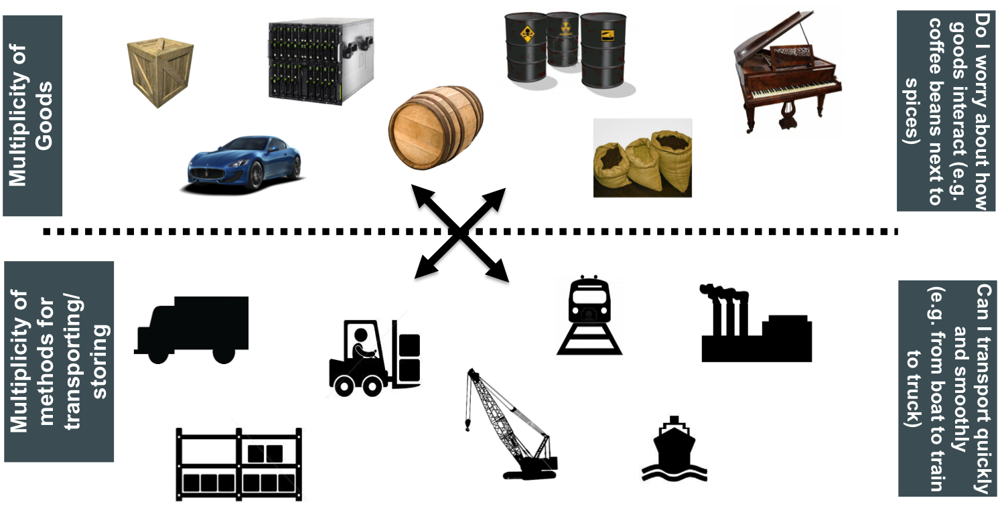
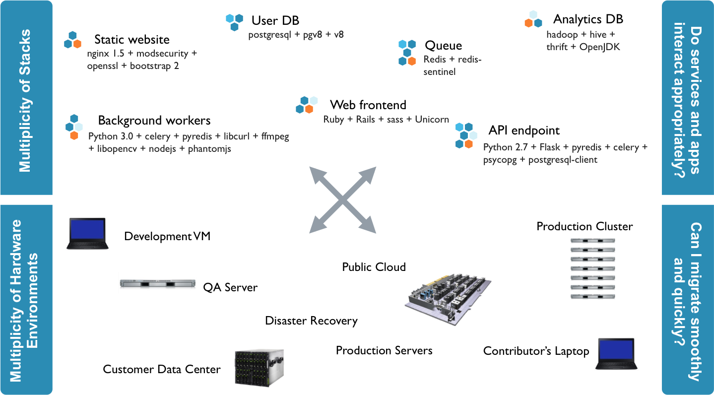
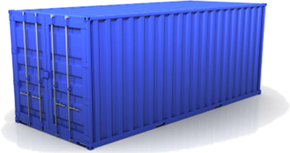
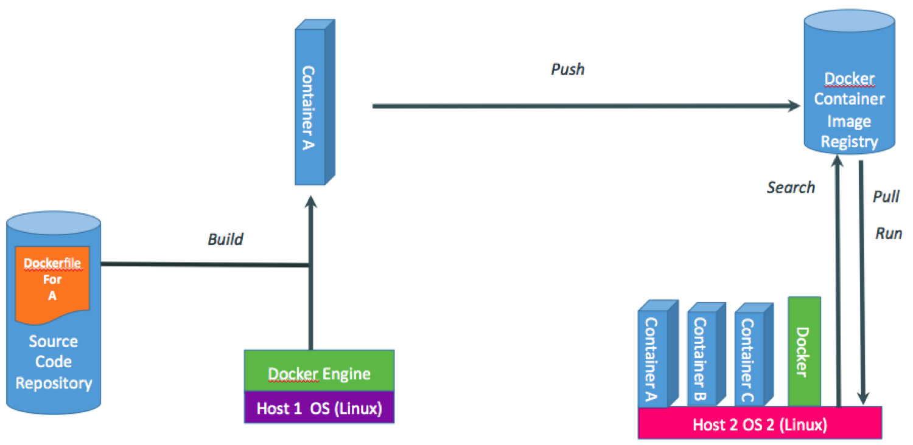
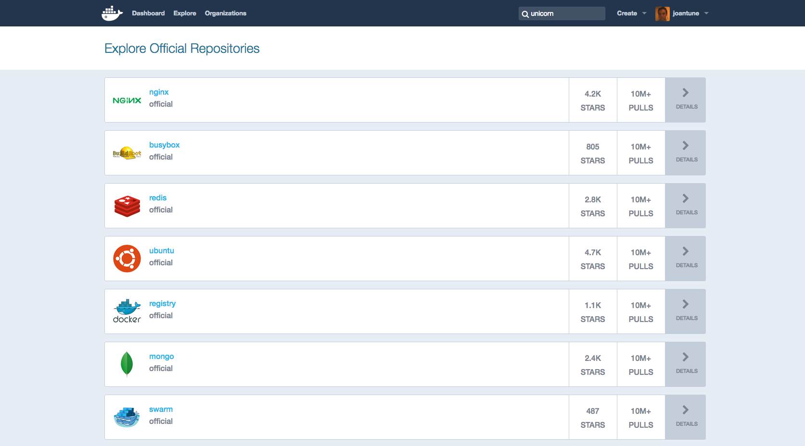

<!doctype html>
<html lang="en">

	<head>
		<meta charset="utf-8">

		<title>Jekyll and Reveal.js</title>

		<meta name="description" content="A framework for easily creating beautiful presentations using HTML">
		<meta name="author" content="Hakim El Hattab">

		<meta name="apple-mobile-web-app-capable" content="yes" />
		<meta name="apple-mobile-web-app-status-bar-style" content="black-translucent" />

		<meta name="viewport" content="width=device-width, initial-scale=1.0, maximum-scale=1.0, user-scalable=no">

		<link rel="stylesheet" href="reveal.js/css/reveal.css">
		<link rel="stylesheet" href="reveal.js/css/theme/beige.css" id="theme">
		<link rel="stylesheet" href="resources/css/font-awesome.min.css" id="theme">
		<link rel="stylesheet" href="resources/css/font-awesome.min.css" id="theme">

		<!-- For syntax highlighting -->
		<link rel="stylesheet" href="reveal.js/lib/css/zenburn.css">

		<!-- If the query includes 'print-pdf', use the PDF print sheet -->
		<script>
			document.write( '<link rel="stylesheet" href="reveal.js/css/print/' + ( window.location.search.match( /print-pdf/gi ) ? 'pdf' : 'paper' ) + '.css" type="text/css" media="print">' );
		</script>

		<!--[if lt IE 9]>
		<script src="reveal.js/lib/js/html5shiv.js"></script>
		<![endif]-->
	</head>

	<body>

		<div class="reveal">

            <div class="slides">

                
<section data-markdown data-separator="^\n---\n$" data-separator-vertical="^\n--\n$" data-notes="^Note:">
<script type="text/template">


### basics & a bit beyond


<p>
<!--
<small style="float:left;">@joantune - <small>22/09/2016 - RoR meetup</small></small>
<small style="float:left;"><small style="float:left;">22/09/2016 - RoR meetup</small></small>
-->

<small style="float:left;"><a href="https://twitter.com/joantune" target="_blank"><i style="vertical-align: bottom;" class="fa fa-twitter-square" aria-hidden="true"></i>  joantune  </a></small>
<!--
<small style="float: left;">@joantune</small>
<small style="float:right;"><small >22/09/2016 - RoR meetup</small></small>
-->
</p>
<footer>
<small style="float:right;"><small >22/09/2016 - RoR meetup</small></small>
</footer>

</script>
</section>

<section data-markdown data-separator="^\n---\n$" data-separator-vertical="^\n--\n$" data-notes="^Note:">
<script type="text/template">
## Who am I

 * Self taught Sysadmin since tender age - co-founded Linux User Group (LUG) when I was ~16
 * Gradually started developing even before college and haven't stopped since then

--

    <!-- .slide: data-background-image="resources/images/large_v-trans.png" data-background-size="65%" -->
   
Note:
Who uses

</script>
</section>

<section data-markdown data-separator="^\n---\n$" data-separator-vertical="^\n--\n$" data-notes="^Note:">
<script type="text/template">
Another Virtualization technology??

## Hipster fad?? <!-- .element: class="fragment" -->
  </img> <!-- .element: class="fragment" -->

** Nope <!-- .element: class="fragment" --> **


Note:

So you know, a lot has been said about docker

but why the hell are they reinventing the wheel with another virtualization

Is docker simply a product of bored techies that are reinventing the wheel?? <!-- .element: class="fragment" -->

do we need another one of these?


--

## No overhead

</img>

<footer style="text-align: left;"><small><small><a href="https://twitter.com/jonasrosland" target="_blank">©jonasrosland</a></small></small></footer>


Note:

How many of you have worked with Vagrant and other virtualization tools for deployment?

The overhead of the harddrive and the CPU/etc overhead

You might be saying, oh great, so we get this new whole set of tools just to shave off some CPU cycles and eventually some bytes?

Not quite

Less isolation

--

## Container - the analogy
</img>
<footer style="text-align: left;"><small><small><a href="https://twitter.com/jonasrosland" target="_blank">©jonasrosland</a></small></small></footer>


--

## Container - the analogy
</img>
<footer style="text-align: left;"><small><small><a href="https://twitter.com/jonasrosland" target="_blank">©jonasrosland</a></small></small></footer>


--

# Solution
</img>

#### The real MV..Concept 

--

Don't have to deal with:
 * Configuring the development environment in the workstation <!-- .element: class="fragment" -->
 * Configuring the production environment in the server <!-- .element: class="fragment" -->
 * Configuring the continuous integration environment in the server <!-- .element: class="fragment" -->
 
 
## One Container to rule them all <!-- .element: class="fragment" -->
## How ?? <!-- .element: class="fragment" -->


Note:

The idea is that you don't have to configure your development environment, you don't configure


</script>
</section>

<section data-markdown data-separator="^\n---\n$" data-separator-vertical="^\n--\n$" data-notes="^Note:">
<script type="text/template">
## Container solution

**cgroups** (abbreviated from control groups) is a Linux kernel feature that limits, accounts for, and isolates the resource usage (CPU, memory, disk I/O, network, etc.) of a collection of processes.

 * Engineers at Google (primarily Paul Menage and Rohit Seth) in 2006 <!-- .element: class="fragment" -->
 * Docker is built on top of that, but it provides much more <!-- .element: class="fragment" -->
 

--

## Container solution


### Local filesystem changes

# 🤔 <!-- .element: class="fragment" -->

Note:

-- In docker you have the concept of images and containers, a container is something that is running or that run, and an image is a more persistent thing --


docker ps 
-- to show running containers --

docker ps -a 

-- to show all of the containers, even the ones that are stopped --

-- so, in this example we are running the ubuntu image, which defaults to the latest version, in a new container named testContainer -- 

docker run -t -i --name testContainer ubuntu /bin/bash

Ctrl + p Ctrl + q

docker images

docker commit -m "Initial commit" useless/test


docker diff testContainer 

docker attach testContainer

echo "test" > confFile

<Detach>

docker diff testContainer

docker commit -m "Configured container" useless/test

docker history useless/test


--

## Container Solution
</img>

<footer style="text-align: left;"><small><small><a href="https://twitter.com/jonasrosland" target="_blank">©jonasrosland</a></small></small></footer>
#### Push and Pull <!-- .element: class="fragment" -->

--

## Container Solution - Le hub


<a href="https://hub.docker.com/explore/" target="_blank">
	</img>
</a>
 * <a href="https://hub.docker.com/_/ruby/" target="_blank">Ruby</a>
 * <a href="https://hub.docker.com/_/redis/" target="_blank">Redis</a>

--

## Container Solution - Dockerfile

<pre>
    <code data-trim data-noescape>
FROM ruby:2.3
RUN apt-get update \
    && apt-get install -y --no-install-recommends \
        postgresql-client \
    && rm -rf /var/lib/apt/lists/*
WORKDIR /usr/src/app
COPY Gemfile* ./
RUN bundle install
COPY . .
EXPOSE 3000
CMD ["rails", "server", "-b", "0.0.0.0"]
    </code>
</pre>


--

## Container Solution - Volumes

 * Volumes - mounting local directories
 * Or - data containers, i.e. volumes as containers
 
# 🤔 <!-- .element: class="fragment" -->

</script>
</section>

<section data-markdown data-separator="^\n---\n$" data-separator-vertical="^\n--\n$" data-notes="^Note:">
<script type="text/template">

<!-- .slide: data-background-image="resources/images/finalSolution.png" data-background-size="90%" -->

--

#OR

 * Use Dockerfile <!-- .element: class="fragment" -->
 * Linking and orchestrating several containers can be tricky <!-- .element: class="fragment" -->
 
 

</script>
</section>

<section data-markdown data-separator="^\n---\n$" data-separator-vertical="^\n--\n$" data-notes="^Note:">
<script type="text/template">
#The mess


<pre>
    <code data-trim data-noescape>
docker run -p 25:25 -p 127.0.0.1:2222:22 -d -name postfix linux/postfix:production /usr/bin/supervisord --nodaemon

docker run -p 587:587 -p 25:25 -p 127.0.0.1:2222:22 -d -name postfix-prod linux/postfix:productionv3 /usr/bin/supervisord --nodaemon


docker run -p 8080:8080 -d -name jetty jettyAndCargo:latest java -Djetty.home=/opt/jetty -jar /opt/jetty/start.jar
 </code>
</pre>

 * Docker compose to the rescue!!


</script>
</section>

<section data-markdown data-separator="^\n---\n$" data-separator-vertical="^\n--\n$" data-notes="^Note:">
<script type="text/template">
# & A bit beyond
## Compose example

<pre>
    <code data-trim data-noescape>
	version: '2'
services:
  web:
    build: .
    depends_on:
      - db
      - redis
  redis:
    image: redis
  db:
    image: postgres
    
 </code>
</pre>


 
 
 
  

</script>
</section>

<section data-markdown data-separator="^\n---\n$" data-separator-vertical="^\n--\n$" data-notes="^Note:">
<script type="text/template">
# A bit beyond

## Orchestrating several servers

 * Docker Swarm
 * Kubernetes
 * Core OS alternative
 * Mix of Ansible + Docker compose


--

 
# A bit beyond

## PaaS / Hosting / Tools to watch out for

 * AWS - Container solution - vendor lock-in configuration
 * Google PaaS - Kubernete (OS) support (AFAIK) - no vendor lock-in (Kubernetes is O.S.)
 * [Dokku](https://github.com/dokku)
 * [Docker registry](https://hub.docker.com/_/registry/)
 * [Docker registry enterprise](https://www.docker.com/docker-trusted-registry)
 * [Other registries](https://hub.docker.com/search/?isAutomated=0&isOfficial=0&page=1&pullCount=0&q=registry&starCount=0)
 * Others tools and services.. (do your research)

</script>
</section>


            </div>

		</div>

		<script src="reveal.js/lib/js/head.min.js"></script>
		<script src="reveal.js/js/reveal.js"></script>

		<script>

			// Full list of configuration options available here:
			// https://github.com/hakimel/reveal.js#configuration
			Reveal.initialize({
				controls: true,
				progress: true,
				history: true,
				center: true,

				theme: Reveal.getQueryHash().theme, // available themes are in /css/theme
				transition: 'default', // default/cube/page/concave/zoom/linear/fade/none

                

				// Optional libraries used to extend on reveal.js
				dependencies: [
					{ src: 'reveal.js/lib/js/classList.js', condition: function() { return !document.body.classList; } },
					{ src: 'reveal.js/plugin/markdown/marked.js', condition: function() { return !!document.querySelector( '[data-markdown]' ); } },
					{ src: 'reveal.js/plugin/markdown/markdown.js', condition: function() { return !!document.querySelector( '[data-markdown]' ); } },
					{ src: 'reveal.js/plugin/highlight/highlight.js', async: true, callback: function() { hljs.initHighlightingOnLoad(); } },
					{ src: 'reveal.js/plugin/zoom-js/zoom.js', async: true, condition: function() { return !!document.body.classList; } },
                    
					{ src: 'reveal.js/plugin/notes/notes.js', async: true, condition: function() { return !!document.body.classList; } }
                    
                    
				]
			});

		</script>

	</body>
</html>
